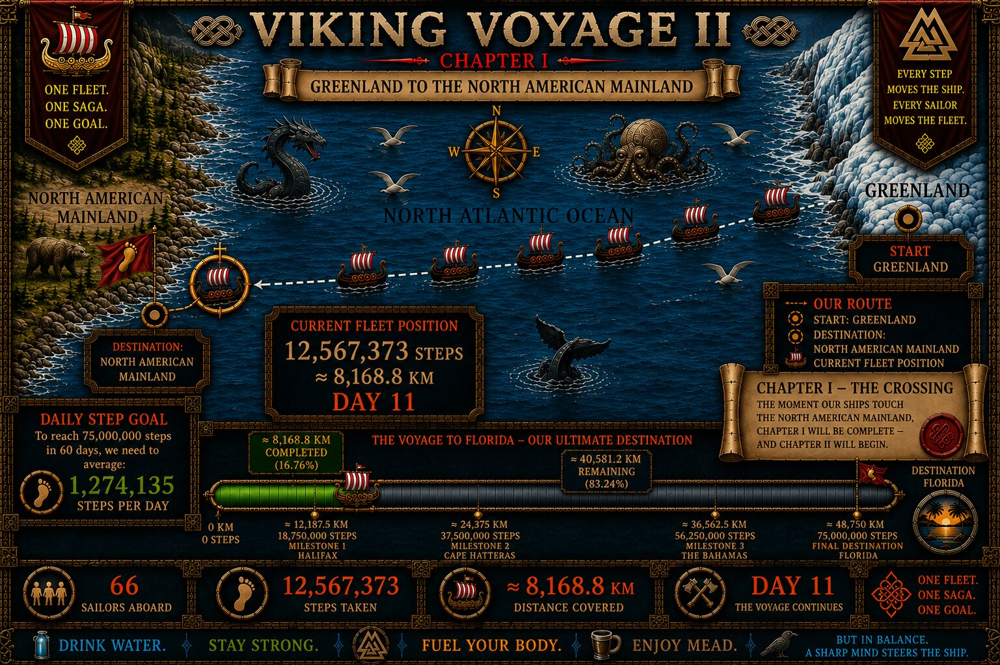

THE VOYAGE ARCHIVE · THE CAPTAIN'S LOG
DAY 11
The sea changed. The crossing entered its darkest night yet.

CAPTAIN'S LOG · DAY 11
THE SEA CHANGES.
For eleven days the fleet had sailed west. Then the wind fell, the waves grew strangely quiet, and Hugin and Munin disappeared into the darkness.
Captain Hákon ordered the sails lowered, the oars secured and every Viking awakened as a wall of black cloud rose from the sea.
THE NORTH ATLANTIC IS COMING FOR US.
— Captain Hákon
DAY 11 RECORD
THE EVIDENCE THEY LEFT BEHIND
The day's HISTORY chapter examined the archaeological evidence at L’Anse aux Meadows. Crew Honors added Asmund, Åsa and Gudrun to the Ship's Roll.